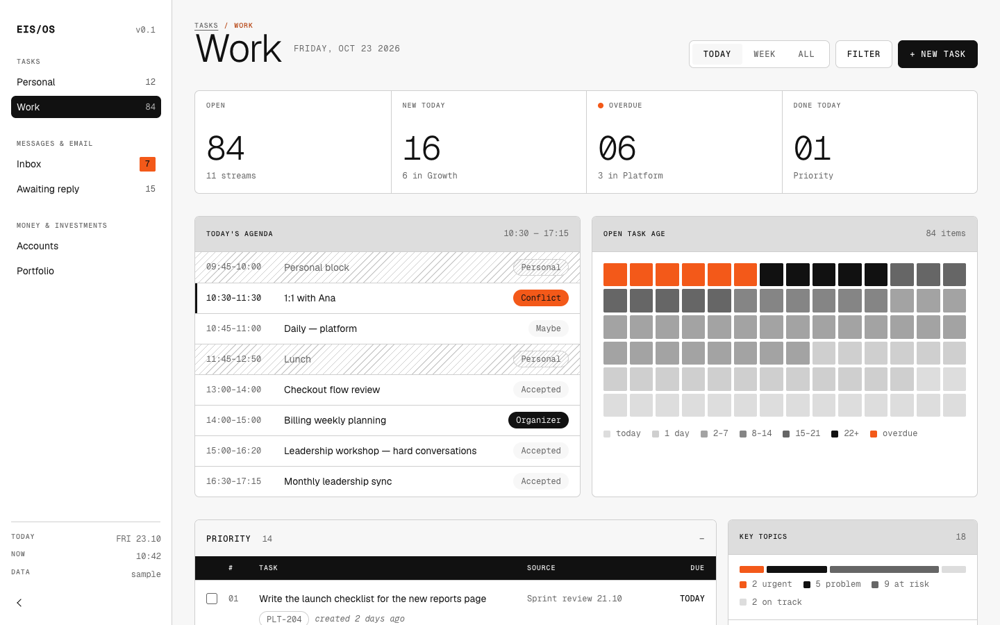
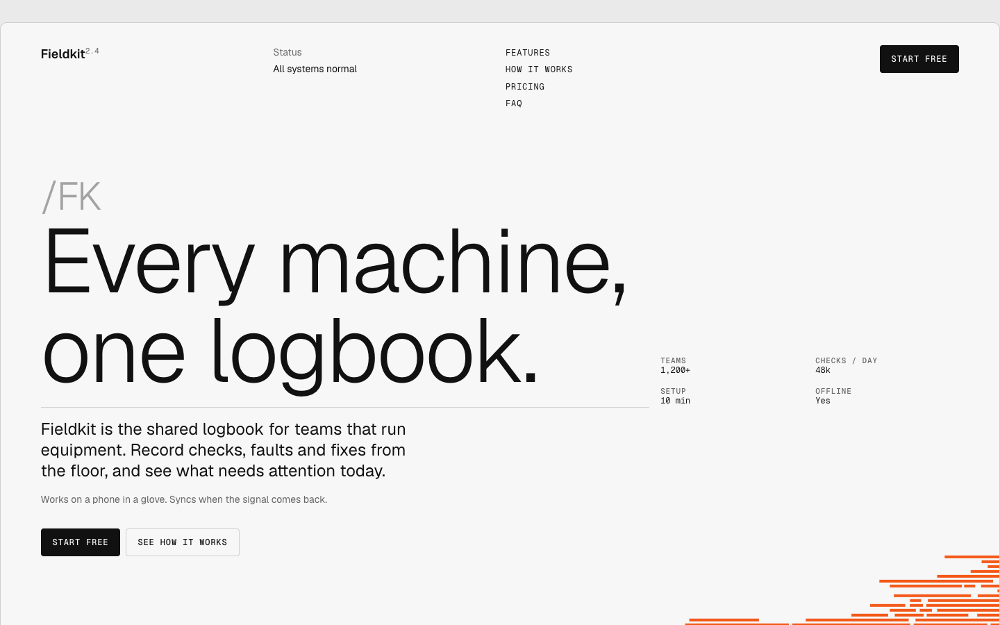

eis-ds / examples
Examples
Pages and templates built with the system. Each one links one scope entry (src/web/web.css or src/app/app.css) and keeps only its own layout CSS, so changing an element here changes it everywhere.
- Examples
- 2
- Folder
- site/examples/
-

Dashboard · Tasks / Work
Personal productivity dashboard: sidebar, metrics, agenda, task age, task tables by stream, key topics.
-

Landing page · Fieldkit
Product landing page for a fictional product: hero with line art, features, results, use cases, steps, pricing, FAQ and closing call to action.